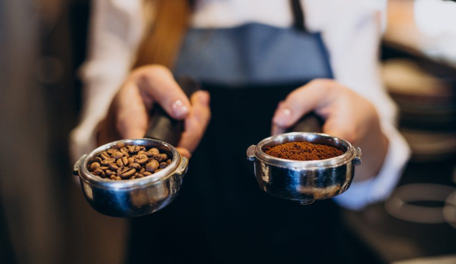

COFFE ARÁBICA


En Coffee Arábica nos especializamos en el arte latte. ¿Sabías que para tener un mejor resultado en la taza de café, debes tener un buen espresso? ¡No te preocupes! Nuestros cursos también cuentan con un taller de espresso, para que conozcas las bases necesarias de su preparación y sabor.
Únete a ser parte de esta experiencia.
Capacítate ahora.
